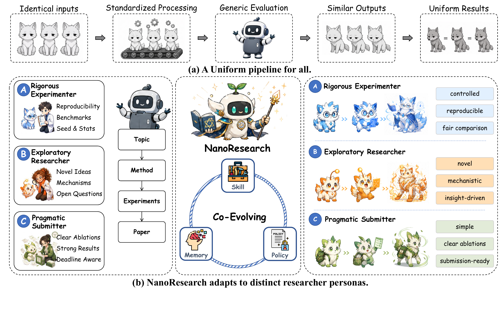
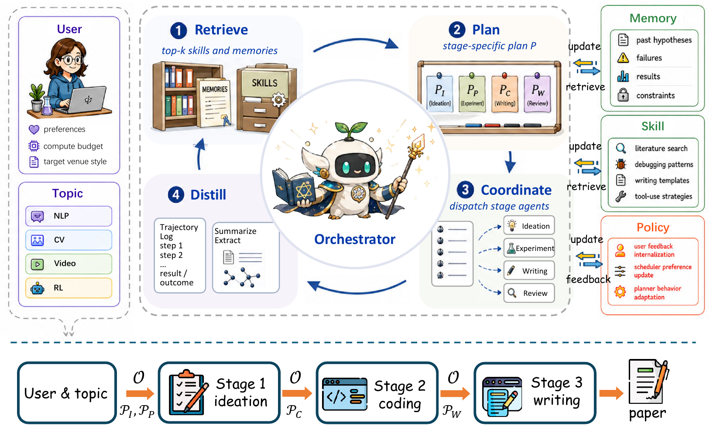
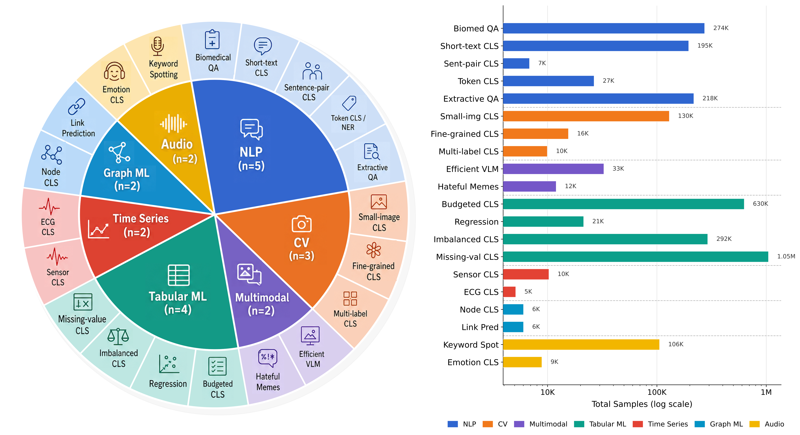
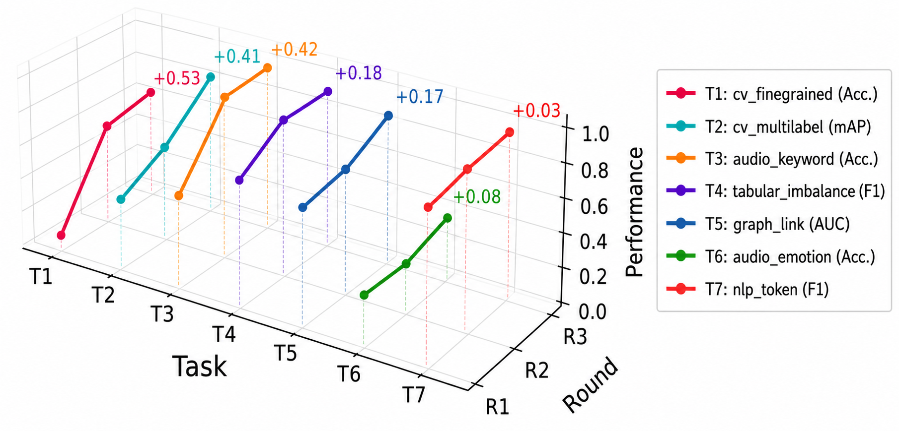
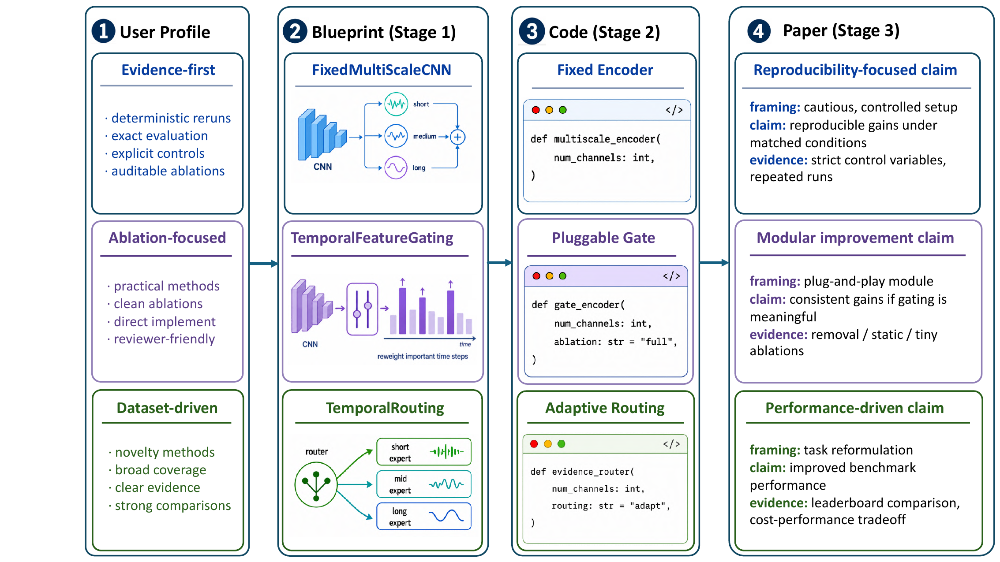

三层共同进化
Memory 保存用户与项目经历，Skill 抽象可复用程序知识，SDPO 将自然语言反馈写进 Planner 参数。
不是一个像 Claude Code 那样自由行动的“科研大脑”，而是一条固定九阶段流水线；论文的新叙事，是在流水线上叠加用户画像、Memory、Skill 与可选 Policy Router。
一句话定位：NanoResearch 是“Python 决定阶段顺序、不同 LLM 在固定工位完成任务”的自动科研工作流。它有局部 ReAct、调试和审稿循环，但顶层不是通用自主 Agent。
Memory 保存用户与项目经历，Skill 抽象可复用程序知识，SDPO 将自然语言反馈写进 Planner 参数。
九个阶段顺序写死；每个阶段检索画像、Memory 和 Skill，拼入 Prompt，再调用配置好的模型。
公开仓库能收集 SDPO 数据、调用外部 Router；未配置时只取前三条候选并使用通用 fallback。
它是具有局部工具循环的确定性 LLM 工作流，不是 OpenClaw 或 Claude Code 式通用 Agent Runtime。

论文把流程压缩成 Ideation、Experiment、Writing 三个宏观阶段；代码中的 Deep/Evo pipeline 展开为九个按顺序执行的 Agent 类。

状态机、输入接线、重试、断点、产物注册、成本统计和最终导出。它不负责科学内容生成。
每个 Agent 类读取结构化输入、组 Prompt、调用阶段模型、校验 JSON，并写入工作空间。
Manifest/JSON 保存过程；OpenAlex、arXiv、GitHub、PDF reader、shell/SLURM 等完成外部动作。
nanoresearch run --topic "..."
└─ cli.py 选择 deep / evo / standard
└─ DeepPipelineOrchestrator.run()
├─ prepare_inputs(stage, accumulated_results)
├─ agents[stage].run(...)
├─ 保存 JSON + 更新 manifest
└─ 失败时按固定预算重试
每个 Agent 内部：
profile + memory + skill + optional router plan
→ system/user prompt
→ OpenAI-compatible chat.completions
→ Pydantic / JSON 校验
→ workspace artifactnanoresearch/cli.py命令入口与 pipeline 模式选择。
pipeline/base_orchestrator.py固定阶段循环、重试、resume、成本与状态。
pipeline/deep_orchestrator.py创建九个 Agent，并明确上游结果如何传给下游。
pipeline/multi_model.py通过 OpenAI-compatible API 调度阶段模型。
| 论文中的动作 | 代码里的实际实现 | 是否由 LLM 决定 |
|---|---|---|
| Retrieve | 按关键词、标签、项目、时间、置信度检索 Memory/Skill 候选 | 候选生成主要是启发式 |
| Plan | 可选 Router 从候选中选 ID，返回一段 prompt_plan | 配置外部 Router 时是；否则 deterministic fallback |
| Coordinate | Python 按固定九阶段顺序执行，各阶段输入已经写死 | 不是 |
| Distill | 将运行反馈保存为 Memory，部分轨迹总结成自然语言 Skill | 部分总结可调用 LLM |
| Policy evolution | 收集训练三元组并可接入外部 SDPO Router | 公开仓库没有完整训练器 |
最关键的边界：真正决定“下一阶段是什么”的是 Python 状态机；Router 只在阶段 Prompt 里增加指导。它不会像 Claude Code 一样动态浏览整个环境、自由选择工具并重写任务路线。
仓库没有一个独立的 LiteratureAgent。文献检索、覆盖评估、证据抽取、Gap 分析、Hypothesis 生成和新颖性复查，都集中在 IdeationAgent 中。
agents/ideation.py总入口：把检索、分析、证据和 GitHub 搜索串起来。
agents/ideation_search.py批量检索、排序过滤、引用扩展、PDF 和覆盖补检。
agents/ideation_hypothesis.pyReAct 工具、新颖性复查、Gap/Hypothesis 和指标抽取。
mcp_server/tools/OpenAlex、arXiv、Semantic Scholar、PDF、GitHub 等具体 API。
NanoResearch 先批量生成最多 5 条 Query，按固定程序检索和过滤；之后最多进行两轮覆盖补检，并在 Hypothesis 阶段给 LLM 最多两轮工具调用。整体仍是预定流程。
literature_sources=["openalex"]。不配置其他来源时，Semantic Scholar 根本不会进入工具列表。
通过配置显式启用；Semantic Scholar 主要提供检索与 paper details，不是系统默认核心。
把主题、用户画像、Memory、Skill 和可选 Router plan 放进 Query 生成 Prompt。
LLM 最多生成 5 条多样 Query；失败时退化为 topic、survey、benchmark 三条。
每条 Query 每个主来源最多取 10 篇；按 paper ID / arXiv ID / 标题去重。
固定追加 survey、review、comprehensive overview 三类 Query，每条最多 5 篇。
主题词重合度至少 0.30；目标保留约 30 篇，兼顾高引论文与最近两年论文。
选引用数最高的 5 篇，通过 OpenAlex 追回其参考文献；新增最多 15 篇且引用数至少 20。
从有 PDF 的论文中按引用数选前 4 篇，最多读 20 页，抽取 Method 和 Experiment 文本。
LLM 给 coverage 1–10 分；低于 8 时根据缺失方向补检，最多两轮。
只根据最多 5 篇综述的摘要，请 LLM 提出 10–15 个必引标题，再与实际论文模糊匹配。
Top 30 论文摘要及少量全文片段进入 LLM，输出领域概述、Gap、候选假设和可行性。
LLM 可再调用配置好的学术搜索工具，最多 2 个工具轮次，寻找每个假设的相似工作。
从摘要抽显式数字指标，并搜索最多 5 个 GitHub 参考仓库，形成最终 IdeationOutput。
| 环节 | 固定上限 / 阈值 | 代码含义 |
|---|---|---|
| 初始 Query | 5 | 一次性生成，不是无限循环 |
| 每 Query 结果 | 10 | OpenAlex/arXiv 分别执行 |
| 目标论文池 | 30 | 排序阶段的目标，不是严格最终上限 |
| 高引标准 | ≥100；希望至少 8 篇 | 不足只告警，不会终止 |
| 最近论文 | 约 1/5 槽位 | 最近两年且引用少于 100 |
| 引用扩展 | Top 5 → 最多新增 15 | 只追参考文献，不同时追 citing papers |
| 全文 | Top 4；每篇 20 页 | 按引用数选，不按主题相关性选 |
| 覆盖补检 | 最多 2 轮；合格线 8/10 | LLM 自评检索覆盖 |
| Hypothesis 工具调用 | 最多 2 轮 | 真正接近 ReAct 的局部循环 |
| 指标抽取 | Top 30；摘要各 500 字符 | 只抽摘要中明确写出的数字 |
semantic_scholar 或 s2 才注册搜索和 paper-details 工具。系统 Prompt 要求“对每个 Hypothesis 搜索相似论文”，但实际工具预算只有两轮。一个轮次可以并行发出多个 Tool Call，所以不等于只搜两次；不过它仍无法构成系统性 novelty review。
最终的 novelty_justification 仍由 LLM 根据有限元数据和片段写出，没有独立的相似度模型、人工核验或完整领域数据库覆盖证明。
Top 4 PDF 的 Method/Experiment 片段用于 Gap/Hypothesis 分析和后续写作；但 _extract_evidence() 单独只读取 Top 30 论文的摘要片段。因此论文所说的“从论文中解析 performance score”，在当前实现里主要是“从截断摘要中让 LLM 抽显式数字”。
{
"topic": "...",
"search_queries": ["..."],
"papers": [
{
"paper_id": "...",
"title": "...",
"abstract": "...",
"citation_count": 123,
"method_text": "...",
"experiment_text": "..."
}
],
"survey_summary": "...",
"gaps": [...],
"hypotheses": [...],
"selected_hypothesis": "HYP-001",
"evidence": {"extracted_metrics": [...]},
"reference_repos": [...],
"must_cites": [...]
}读取选中的 Hypothesis、Gap、前 15 篇论文标题和摘要指标，生成数据集、基线、方法、指标和消融蓝图。
蓝图驱动 Setup、Coding、Execution；文献证据主要约束 baseline 和 performance provenance。
最多使用 50 篇论文生成 cite key，加入综述、Gap、少量全文片段；Introduction/Related Work 等章节还可再搜文献，默认最多 2 个工具轮次。
这意味着 Literature 不只出现一次：主文献库在 IDEATION 建立；写作阶段还存在一个较小的按需检索入口，用于补充或核验引用。
Hugging Face 数据集不是训练语料，而是 20 条标准化的“科研委托书”：问题、推荐基线、外部数据集、用户偏好和算力限制都提前写好。18 条属于增量创新，只有两个多模态任务标为较复杂的组件重组。
共同模板：成熟公开数据集 → 标准基线 → 提出一个轻量改进 → 单 GPU 运行 → 做公平对比与消融 → 输出实现方案或论文。它主要测试工程闭环，不等于开放式科学发现。
目标：有限算力下改进 PubMedQA，保持方法轻量、可消融、可复现。
数据 / 基线：PubMedQA；BioBERT、PubMedBERT、指令微调医学 QA。
目标：提高新闻或情感短文本分类质量，不引入重型训练流水线。
数据 / 基线：AG News、SST-2；DistilBERT、BERT-base、词袋线性分类器。
目标：改进同义、匹配或蕴含判断，强调紧凑模块和短训练周期。
数据 / 基线：MRPC、RTE；DistilBERT、BERT-base、Siamese 双编码器。
目标：不依赖大型 backbone 或昂贵预训练，改进小图像分类。
数据 / 基线：CIFAR-10、FashionMNIST；ResNet-18、MobileNetV3-small、ViT-tiny。
目标：在质量、延迟和系统复杂度之间取得更好平衡，避免脆弱多阶段设计。
数据 / 基线：MMMU、ScienceQA；紧凑 VLM、后期融合模型。标记为 nontrivial recomposition。
目标：不用大型集成和昂贵特征工程，快速改进标准表格分类。
数据 / 基线：Adult、CoverType；XGBoost、TabTransformer、MLP。
目标：以 sklearn 预处理或小型 PyTorch 模型改进连续值预测。
数据 / 基线：California Housing、Energy Efficiency；XGBoost、CatBoost、MLP 回归。
目标：用紧凑、可解释的时序模块改进人体活动识别。
数据 / 基线：UCI HAR；1D CNN、GRU、InceptionTime-small。
目标：对消息传递做简单改进，不使用大型图预训练或多阶段系统。
数据 / 基线：Cora、Citeseer；GCN、GraphSAGE、GAT。
目标：识别短音频命令，保持标准预处理、小模型和适中预算。
数据 / 基线：SpeechCommands；CNN、CRNN、Tiny Conformer。
目标：改进命名实体识别，不增加外部检索或大型处理系统。
数据 / 基线：CoNLL-2003、WNUT17；DistilBERT、BERT-base、BiLSTM-CRF。
目标：改进答案区间选择或校准，不依赖检索密集型多阶段 QA。
数据 / 基线：SQuAD v1.1、NewsQA；DistilBERT、BERT-base、RoBERTa-base。
目标：区分相似宠物或花卉类别，不依赖大型预训练视觉 backbone。
数据 / 基线：Oxford-IIIT Pets、Flowers102；ResNet-18、EfficientNet-B0、ViT-tiny。
目标：改进标签校准或特征共享，不引入检测、分割重型系统。
数据 / 基线：Pascal VOC 2007；ResNet-18、MobileNetV3、ViT-tiny 多标签版本。
目标：在正负样本不均衡时改进预测，不使用昂贵重采样或大型 AutoML。
数据 / 基线：Credit Card Fraud、Telco Churn；XGBoost、LightGBM、MLP。
目标：用简单 masking 或特征门控应对缺失模式，避免大型插补集成。
数据 / 基线：Adult、Higgs Small；XGBoost、TabTransformer、插补 MLP。
目标：用小型时序模块改进序列分类，不使用大型 Transformer。
数据 / 基线：ECG200、FordA；1D CNN、GRU、InceptionTime-small。
目标：改进邻域编码或边评分，保持 PyTorch Geometric 单卡可复现。
数据 / 基线：Cora、Citeseer；GCN+点积、GraphSAGE+MLP、GAT。
目标：学习紧凑时频特征，不依赖大型语音基础模型。
数据 / 基线：RAVDESS、CREMA-D；频谱 CNN、CRNN、Tiny Conformer。
目标：用可解释、紧凑的图文融合识别仇恨 Meme，避免大型服务栈。
数据 / 基线：Hateful Memes；后期融合、CLIP 线性探测、紧凑 VLM。标记为 nontrivial recomposition。
如何理解这些任务：它们覆盖了七种数据模态，但研究形态高度同质——绝大多数都是“小型分类/回归 Benchmark 上增加一个可拆卸模块”。因此领域覆盖广，不等于科研难度和研究范式也同样广。
硬编码污染：compact_final_instruction 无论用户研究什么主题，都要求“Prefer a feasible single-GPU ESM2 LoRA/adapter plan for fluorescence prediction”。这显然是某个蛋白荧光任务遗留的 Prompt，会在工具循环结束或 fallback 时把其他主题拉向 ESM2/荧光预测。
主题 token 使用正则 [a-z0-9]+。若直接输入纯中文主题，token 集为空，所有论文的相关性得分都会是 0，并可能全部被过滤。
覆盖评估报错或返回异常结构时，代码默认 coverage_score=10，因此系统会把无法评估误当成“覆盖充分”。
主检索遵守 literature_sources；但 _search_surveys() 直接调用 OpenAlex，即使用户没有选择它。
LLM 只看最多 5 篇综述的截断摘要，就提出 10–15 个必引标题；随后虽有模糊匹配，但候选生成本身容易幻觉。
量化证据没有解析论文表格，也没有系统读取正文结果段；摘要没写数字就无法进入 evidence bundle。
IdeationOutput 定义了 theme/challenges/future 字段，但当前 Ideation 路径没有赋值；Writing 又期待 paper_mode，该字段也不在此输出 Schema 中。
审计结论：这个 Literature 模块比简单关键词搜索丰富，确实包含引用扩展、少量全文、覆盖补检和工具式 novelty check；但它仍是启发式与 LLM Prompt 组合，不应被理解为严格、可证明完备的系统综述或新颖性审查器。
论文构造了 20 个机器学习主题，覆盖 NLP、CV、表格、时序、图、音频与多模态；Claude 同时生成任务并扮演模拟研究者提供反馈。



Alignment 8.163→8.963，Novelty 4.960→5.645，Performance 0.6844→0.7548；E2E 保持 100%。
作者报告每个主题总成本从 R1 的 \$4.157 降至 R3 的 \$1.430，解释为经验减少无效调用与 GPU 时间。
Alignment、Novelty 和 Writing 依赖 LLM 主观评分；Novelty 主要相对于提供的基线，而不是完整学术世界。
真人实验只有三位研究者和三个任务，没有盲评、置信区间或显著性检验，属于初步案例而非强验证。
NanoResearch 最可信的贡献是一个较完整、可审计、可运行真实实验的科研工程流水线；最需要保留意见的是“SDPO 驱动三层共同进化”和“可靠验证新颖性”的强叙事。Literature 模块能帮忙建立候选文献池、生成研究蓝图，但不能替代真正的系统综述与专家 novelty review。
agents/ideation.pyLiterature/Idea 总执行顺序与固定参数。
agents/ideation_search.py过滤、排序、引用扩展、全文和 coverage。
agents/ideation_hypothesis.py搜索工具、Gap/Hypothesis Prompt 与硬编码问题。
mcp_server/tools/openalex.py默认学术搜索与参考文献图扩展。
mcp_server/tools/pdf_reader.pyPDF 下载、文本与章节切分。
agents/planning.py文献结果如何转成实验 Blueprint。
writing/context_builder.py论文库、全文片段和实验结果如何进入写作。
router_policy.py可选 Router 与 deterministic fallback。